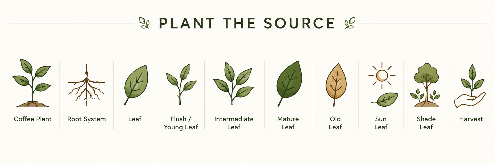

Reference image — Plant the Source. Ten stages from the plant to harvest.

The whole plant — roots, stem, branches, and leaves — as a living system. The coffee plant is the source of Buna. Its health, variety, and growing environment determine everything that follows. For Citane, this is Arabica Chandragiri grown under rubber shade at Thumpassery Estate.
See Leaf Origin for growing factors →
The underground network that anchors the plant, draws water, and transports minerals and nutrients upward into the leaves. A healthy root system is the hidden foundation of leaf quality. Root health is directly connected to soil health and water management.
See Plant Care — Root Health →
The individual coffee leaf — the primary unit of Buna. Each leaf is a self-contained system of chlorophyll, water, compounds, and structure. The leaf is where photosynthesis happens, where bioactives accumulate, and where flavour potential is built. Not all leaves on one plant are equal.

The newest growth — tender, light green, and still expanding. Young leaves are high in certain bioactive compounds and delicate in structure. They require careful handling at harvest. In Buna processing, the flush stage produces a different cup character to mature leaves: brighter, more fragrant, more perishable.
See Seasons — Flush Cycle →
A leaf that has partially expanded but not yet reached full maturity. Intermediate leaves offer a balance between the brightness of the flush and the body of the mature leaf. They are often considered the optimal harvest point for certain Buna preparations.

A fully developed leaf — deep green, firm, and structurally complete. Mature leaves carry balanced flavours, more body, and a denser compound profile. They withstand processing steps such as steaming and rolling better than younger leaves. The workhorse of Buna production.

A leaf past its peak — yellowing, losing chlorophyll, and with a changing compound profile. Old leaves are generally not used for premium Buna. Understanding when a leaf crosses from mature to old is part of selective harvest skill.
See Quality at Source — Selective Harvest →
Larger leaves typically develop under good light and nutrition conditions. They offer more material per pick but may extract differently to smaller leaves — more surface area relative to thickness means faster extraction. Leaf size consistency within a batch matters for uniform brewing results.

Smaller leaves are often associated with shade-grown or slow-growth conditions — denser in structure and sometimes more concentrated in flavour compounds. In some preparations, small leaves are preferred for their finer texture and more delicate cup character.

Leaf material fragmented during harvest, processing, or transport. Broken leaf extracts faster than whole leaf and can make brew strength and consistency harder to control. In grading, broken leaf is separated from whole leaf and may be directed toward different brewing formats such as filter or concentrate.
See Process — Sorting →Why leaf character matters for Buna
In conventional tea production, the flush is consistently prized. In Buna, the relationship between leaf stage and cup quality is less fixed — it depends on the processing method, the tradition being followed, and the flavour target. Knowing the stage and character of your leaf is the first conversation in Buna quality.